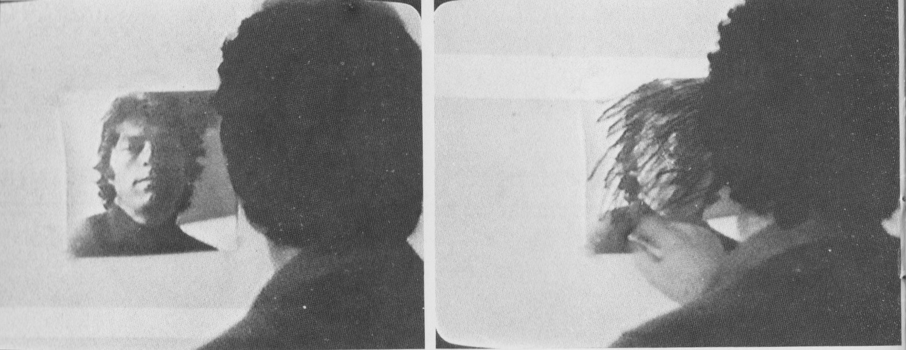
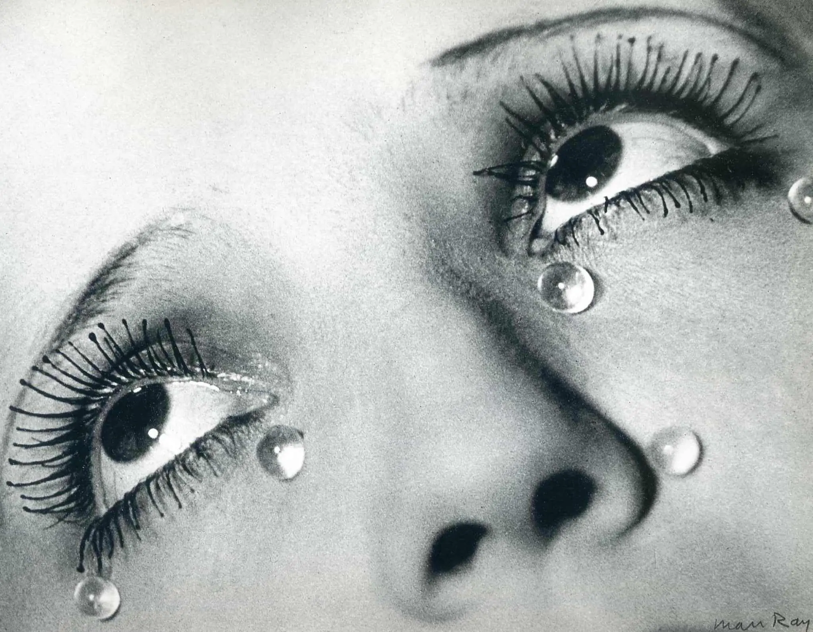

Home
Informazioni
Opere
Tutte
Opere giovanili
Periodo Concettuale
Corde
Periodo Optical
Ritratti d'ignoto
Poltrone
Le carpe di Sanli Urfa
Icaro
Dal Vangelo secondo Luca
Comunicazioni e avvisi
Esposizioni
Gianfranco Goberti

Sezione

This photo was taken in 1922 by Man Ray. The model is Kiki da Montparnasse.
This photo was taken in 1922 by Man Ray. The model is Kiki da Montparnasse.
This photo was taken in 1922 by Man Ray. The model is Kiki da Montparnasse.
Sezione dx
Contatti ulteriori, ciao mua